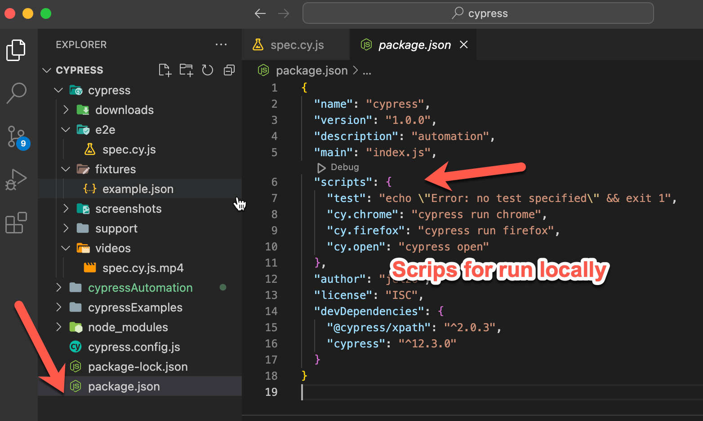

Cypress installation
Node version manager NVM here
Open a terminal in you project folder
npm init
Install cypress --> npm install cypress --save-dev
Check cypress version --> npm cypress -version
Open cypress (inside your project) --> npx cypress open
Once cypress is open, select e2e testing, continue
Test cases folder --> e2e
Cypress test cases extensions --> cy.js
Cypress documentation
Download cypress snippets for visual code
Cypress files structure

e2e.js file, works for inherit object or flows
Usefull scripts for your project in the package.json file
script for run your project

to run execute in the project path: npm run cy.chrome
xpath pluggin
Documentation
inside you project: npm install -D @cypress/xpath
Then include in your project's support e2e.js file: require('@cypress/xpath');
usage: cy.xpath('//body')
Tips
Filters allows you to filter an element by an state
- enabled
- disabked
- checked
- empty
- visible
- Add ":filterName" inside the path of a locator
- Usage example: cy.get(['checkbox':checked)